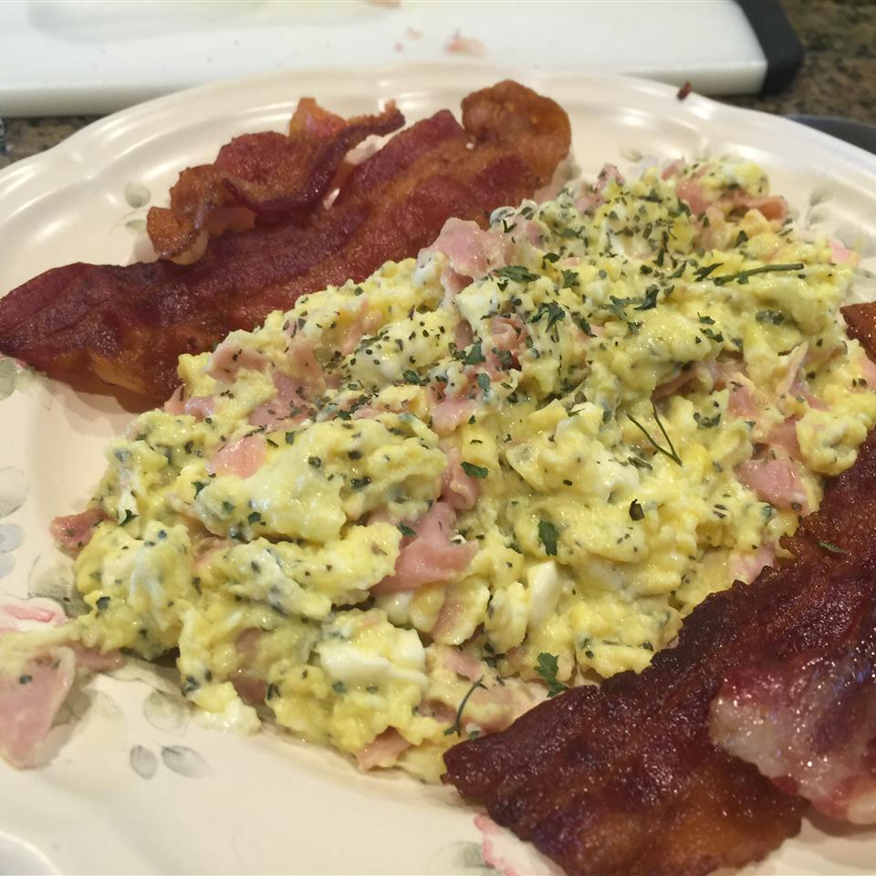

Ham, Basil, and Feta Scrambled Eggs

Description
Delicious and savory scrambled eggs with ham, basil, and feta cheese.
Ingredients
- 4 eggs, lightly beaten
- ½ cup diced cooked ham
- ¼ cup crumbled feta cheese
- 1 tablespoon dried basil
- salt and pepper to taste
- 1 ½ teaspoons butter
Directions
- Place a skillet over medium heat. Place the lightly beaten eggs in a bowl; stir in the ham, feta cheese, basil, salt, and pepper.
- Melt the butter in the skillet. Pour in the egg mixture; cook and stir eggs until firmed and no longer runny, about 5 minutes.